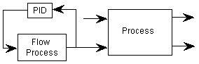
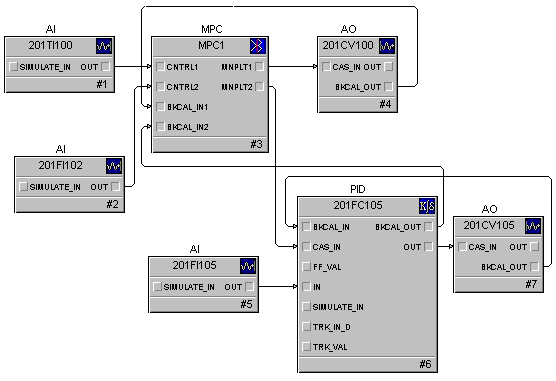
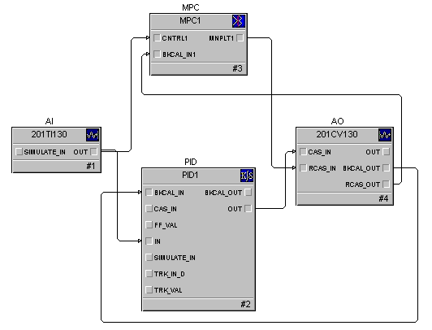

Model Predictive Control function block wiring to an MPC function block
The MPC function block may be wired to input and output blocks that are assigned to traditional or HART transmitters and valves. It can also be used with blocks that are assigned to fieldbus devices. All function blocks connected to the MPC function block must contain a scaling parameter. During MPC execution, this scaling information is automatically read by the MPC block and used in input-output scaling within the block. If an MPC block's inputs are connected to a block that does not contain a scaling parameter (for example, a math block) a Scaler function block is required. The Scaler function block is directly wired to both the MPC and upstream function blocks so that the MPC block can access the scaling information.
All function blocks that are wired to the MPC block are expected to be within the same module. If you are connecting an input or output to a block in another module, use the MPC_INREF or MPC_OUTREF templates.
The MNPLT outputs must be wired directly to the CAS_IN, RCAS_IN, or ROUT_IN inputs of the downstream function blocks. If the MPC block is being used to replace a PID block, it is typically wired to an AO block. However, for many other applications, the output of the MPC function block is wired as the cascade input of a PID, Fuzzy Logic or Ratio function block that provides the process input. An example of such wiring is illustrated in the following figure.

In such cases, the downstream process setpoint is treated by the MPC function block as the manipulated process input. As such, the MPC function block's manipulated output is wired to the CAS_IN of this function block, as shown in the following figure.

Like other DeltaV control blocks, you must wire the BKCAL_OUT (or ROUT_OUT or RCAS_OUT if the manipulated output is wired to ROUT_IN or RCAS_IN) of the downstream block to the BKCAL_IN inputs of the MPC function block.
In some cases, the MPC function block replaces an existing control strategy. You can layer the MPC function block on the existing strategy. Doing so allows the MPC control to be implemented with the old strategy as a backup. You can achieve this by exposing the AO or control block's RCAS_IN and RCAS_OUT (or ROUT_IN and ROUT_OUT) that the existing strategy is manipulating. Also, you can wire the MPC function block to these parameters in much the same way that you can wire to CAS_IN and BKCAL_OUT. An example of this wiring is shown in the following figure.

Block Errors
Block onfiguration error — The scan rate is too slow; an error condition is active.
Input failure/process variable has Bad status — The source of the block's process variable is bad.
Local Override — The block is in Local Override (LO) mode.
Out of Service — The block is in Out of Service (OOS) mode.
Simulate active — Simulation is enabled and the block is using a simulated value in its execution.